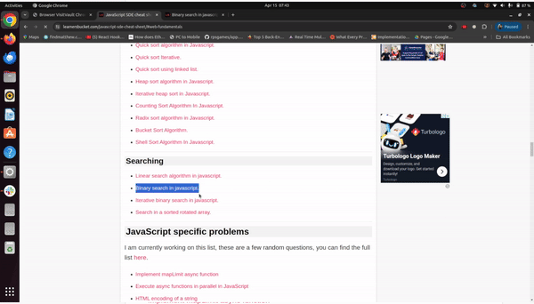

Description
Browser VisitVault is a powerful Chrome extension designed to enhance your browsing experience by providing comprehensive tracking and organization of visited URLs. With Browser VisitVault, effortlessly keep track of the websites you've visited within specific domains, ensuring easy access to previously viewed content.
Features
- Automatically tracks and records URLs visited within the specified domain, reducing manual effort.
- Visited links are visually highlighted on webpages, providing clear indication of previously visited pages.
- Displays a comprehensive list of visited URLs within the domain, facilitating easy access to previously visited content.
- Provides real-time updates as users navigate through the domain, ensuring the URL list remains current.
- Focuses on tracking URLs within a specific domain, enabling efficient organization and management of visited links for each website.
- Designed to consume minimal system resources, ensuring efficient operation without impacting performance.
- Respects user privacy by only tracking URLs within the specified domain and refrains from collecting any personally identifiable information.
Demo
Installation
- Clone the extension repository or download it.
- Open Chrome and navigate to
chrome://extensions/. - Enable Developer Mode by toggling the switch in the upper-right corner.
- Click on the "Load unpacked" button located at the top-left corner of the extensions page.
- Select the directory where you cloned or downloaded the extension repository.
- Confirm the installation when prompted.
- Utilizes Chrome sync capabilities to sync visited URL data across multiple devices, ensuring consistency and accessibility.
How to Run Locally
- Clone the Repository:
git clone https://github.com/dikshantrajput/Browser-VisitVault - Run the server:
npm run dev - Make any change and just save. Your extension should refresh.
- Build the project:
npm run build
Usage
- Once installed, Browser VisitVault will automatically start working whenever you visit websites within designated domains.
- Navigate through websites within the specified domains as you normally would, knowing that Browser VisitVault is capturing your browsing history in real-time.
- To access your visited URL history, click on the extension icon in the Chrome toolbar, and you get to view the list of visited URLs for the current domain.
Compatibility
This extension is compatible with Google Chrome and Chromium-based browsers.
Contributing
Contributions from the community are welcomed. If you'd like to contribute to the development of this extension, please fork the repository, make your changes, and submit a pull request. If you found any issue, please raise an issue.
Disclaimer
Browser VisitVault is an independent project developed solely for the purpose of enhancing the browsing experience by tracking and organizing visited URLs within specified domains. It is not endorsed by or affiliated with Google Chrome or any other browser manufacturer.